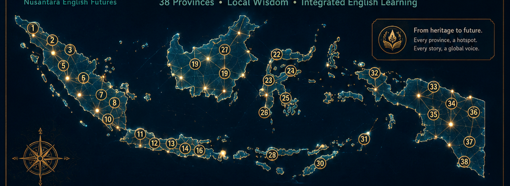

AKSANTARA
From Aksara to AI
AKSANTARA is an executive edu-cultural app transforming Aksara Nusantara, provincial wisdom, oral traditions, and integrated English skills into one interactive journey. Every province becomes a living hotspot: script, voice, story, vocabulary, reading, speaking, writing, intercultural reflection, QR discovery, and ethical AI support.

Six Living Zones
Each zone is implemented as a connected app module. Choose a province, then the selected Aksara, wisdom, voice, tasks, QR, and admin record update across the system.
Heritage Roots
Aksara, manuscripts, stories, voices, and provincial wisdom form the learning foundation.
Future Horizons
AI, QR, audio, 4D exploration, and integrated-skill tasks help learners communicate globally without losing cultural identity.
Province Hotspots
Select any province. The whole app updates automatically: Aksara Studio, Skills, Voice Atlas, AI Tutor, QR Station, and Admin statistics.

Aksara Studio
Every province introduces a local script tradition, manuscript spirit, local wisdom, and English-learning transformation.
Heritage-to-English Mission
0% completed
Skills Lab
Listening, speaking, reading, writing, vocabulary, and intercultural reflection are integrated with the selected province and its Aksara heritage.
Selected Province
0 of 6 tasks completed
Voice Atlas
Practice intelligible English while respecting local identity. The focus is clarity, confidence, rhythm, and intercultural meaning.
Pronunciation Focus
“Our local script and wisdom can speak to the world through English.”
Ready
AI Tutor
No API key is required. This offline tutor gives guided prompts based on the selected province, Aksara seed, and integrated-skill mission.
Aksantara AI
Suggested Prompts
QR Discovery
Generate a province QR card for exhibition visitors. The card updates based on the active province.
What the QR Opens
Dossier
Reference boards are included as a professional dossier. The actual app features above are live and clickable.
Admin
Protected by PIN. Use it to review selected province activity and reset local app data.